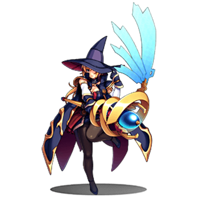
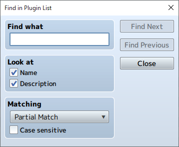
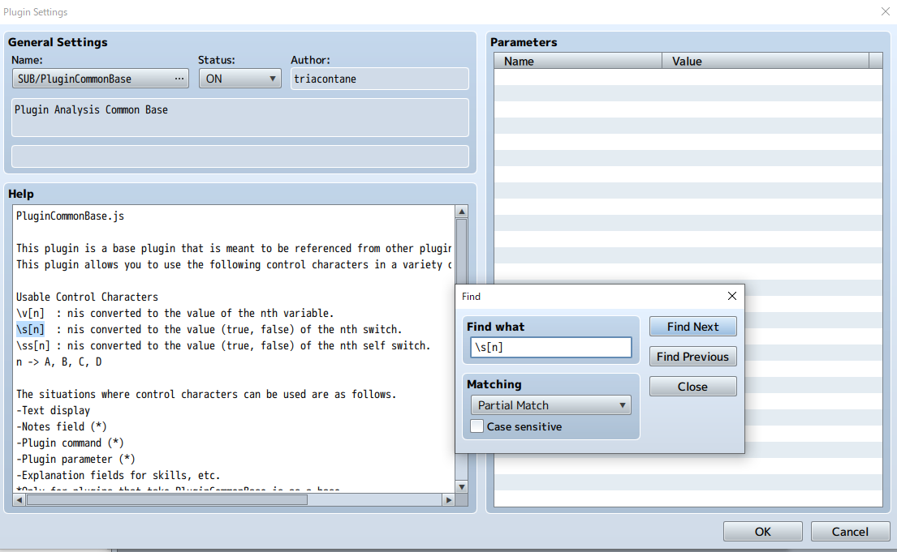

RPG MAKER MZ HELP
Menu Bar Content
Details regarding the items found in the Menu Bar in the Main Window are as follows.
[File] Menu
-
New Project
Creates a new project. If a project is already open, it will be closed upon creating a new project.
-
Open Project
Opens a saved project, allowing you to edit your game. Select your [Game] (or [game.rmmzproject]) file by selecting it inside its project folder using the [Open] window.
-
Close Project
Closes the project that is currently open. A confirmation window will appear if there is data which has not been saved. Click [Yes] to close the project after saving, or click [No] to close the project without saving.
-
Save Project
Overwrites the contents of the project you are currently editing.
-
Deployment
Builds your project in the platform format selected. Please see [Output Formats] for more information.
-
Close RPG Maker MZ
Closes the program. Just like [Close Project], a confirmation window will appear if there is any unsaved data.
[Edit] Menu
-
Undo
Allows you to undo the action that you just performed and return the project to its previous state. You can undo up to 20 actions.
-
Cut
Copies data such as map data and map events to the clipboard before deleting it.
-
Copy
Copies data such as map data and map events to the clipboard.
-
Paste
Adds the contents of the clipboard as new map data and map events.
-
Delete
Deletes data such as the map data and map events you have selected.
[Mode] Menu
-
Map
Switches to the Map Design Editor Mode.
-
Event
Switches to the Map Events Editor Mode. Lines determined by the size of tiles are displayed in the Map View.
*Select the [R] tab in the Tileset to enter the Region Editor Mode where you can define the region where enemy groups will appear (areas where you encounter enemies).
[Mode] Menu
A tool for drawing on tiles is available in the Map Editing Mode. Please see [Editing Map Designs] for more information.
[Layer] Menu
Switches layers in map editing mode. You can select an individual layer to edit the map without affecting other layers.
Please see [Editing Map Designs] → [Other Editing Functions] → [Map Layer Selection Function] for more information.
[Scale] Menu
-
Zoom In
The Map View will get bigger each time you select Zoom In.
-
Zoom Out
The Map View will get smaller each time you select Zoom Out.
-
Actual Size
Displays map in standard size (actual size display).
[Tool] Menu
-
Database
Opens the settings window for the [Database] where you can create/edit elements such as your characters and items.
-
Plugin Manager
Runs the Plugin Manager. Please see [How to Use Aid Tools] for more information.
  -
Sound Test
You can play test sounds loaded as resource files in your project. Please see [How to Use Aid Tools] for more information.
-
Event Searcher
You can search for events using various conditions. Please see [How to Use Aid Tools] for more information.
-
Character Generator
Combine pre-made parts to make face graphics, walk characters, and battlers. Please see [How to Use Aid Tools] for more information.
-
Resource Manager
You can manage resources included in your project. Please see [How to Use Aid Tools] for more information.
[Game] Menu
-
Playtest
Starts playtesting. Please see [How to Use Aid Tools] for more information.
-
Skip Title Screen
If the check is turned on, the game always starts with a New Game.
-
Open Folder
Opens the folder where your project is saved. Use this when you want to check the location of your project folder or when you want to manually move files in your project folder.
-
Update Core Script
You can update the version of the core script.
[Help] Menu
-
About
Displays the Help window (this window).
-
RPG Maker Website
Accesses the RPG Maker website.
https://tkool.jp/ -
Tutorials
Starts a tutorial. Please see [How to Use Aid Tools] for more information.